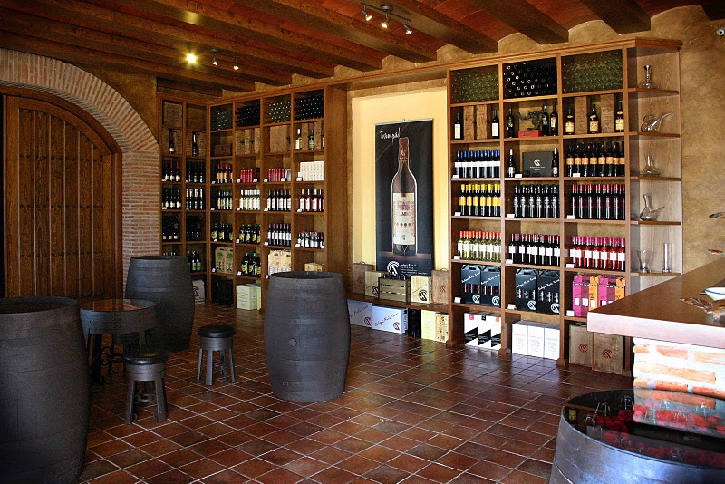
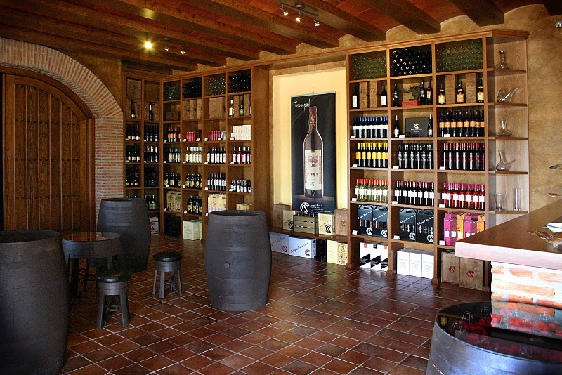

Les primeres dades recollides del celler es remunten a l'any 1870, Miguel Ruiz, elaborava vins a l'estil tradicional de la zona amb varietats autòctones com era l'”alarije”. Aquestes elaboracions eren anomenades “pitarras” i es venien als veïns de la localitat.
El 1973 munta la seva primera línia d'embotellat, única en aquells moments i de gran novetat, el 1983 realitza les seves primeres exportacions a països com Rússia i Alemanya i el 1990 és quan el celler experimenta una gran expansió, gràcies als vins de qualitat que s'estaven elaborant i al caràcter comercial i emprenedor d'Antonio Ruiz Torres.
L'any 2000 construïen 11.000 metres d'Instal·lacions Vitivinícoles, amb maquinària d’última Tecnologia per a l'elaboració i envelliment del vi i l'any 2009 comença un nou projecte amb la construcció d'un complex cultural del vi.
El 2014 van apostar per l'Enoturisme, aprofitant la situació del Celler i la proximitat amb el Monestir de Guadalupe. Aquest any van obrir el celler per a visites, tasts, esdeveniments etc.
La vinya es desenvolupa sobre un terra de pissarra molt apropiat per al cultiu de la vinya a la muntanya, exactament a una altitud de 800 metres i amb una pluviometria d'uns 1200 mm anuals, això sumat al microclima particular que predomina durant l'estiu, dies calorosos i nits fresques, fan que la maduració i el verol del raïm sigui molt més lent que en altres zones, el baix rendiment fa no superar de 5.500 kg per hectàrea, això és fonamental per obtenir raïms de molt alta qualitat.